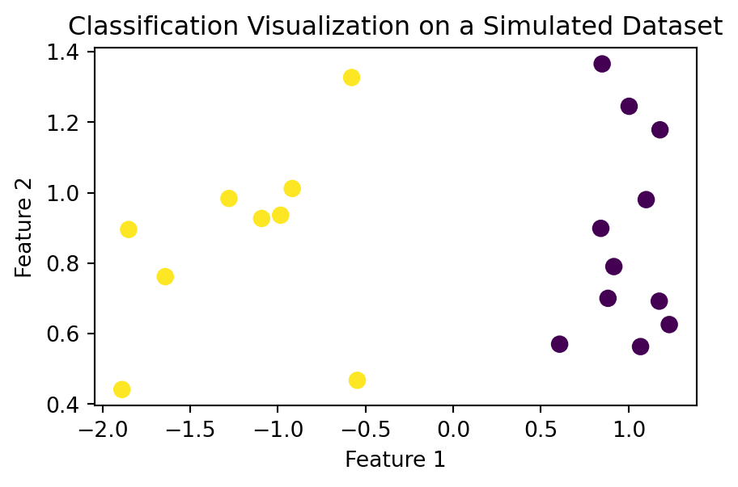
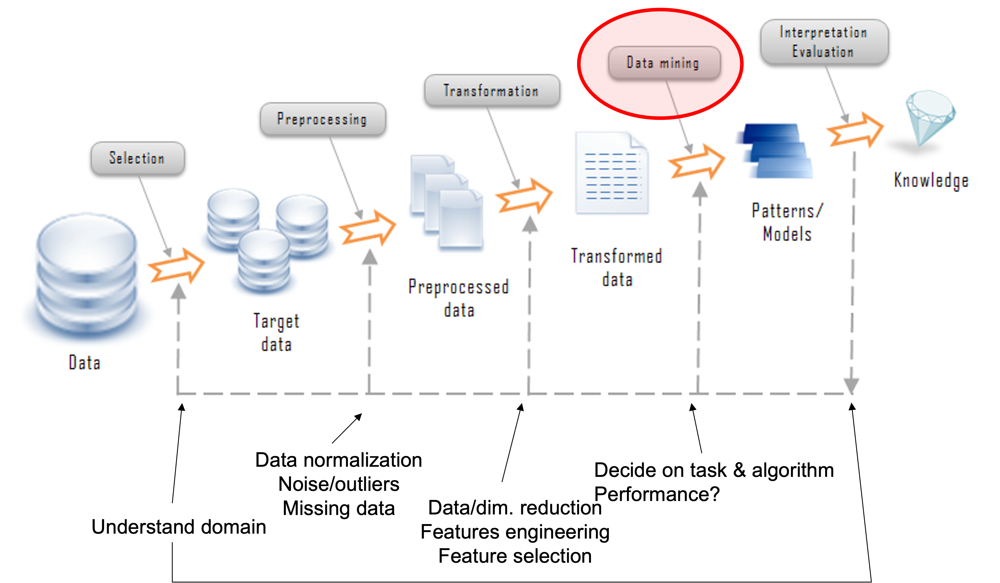
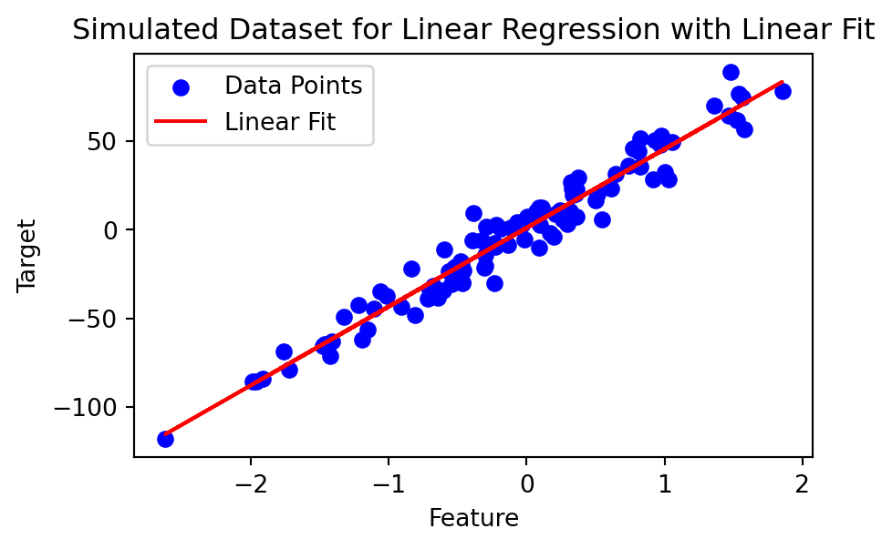
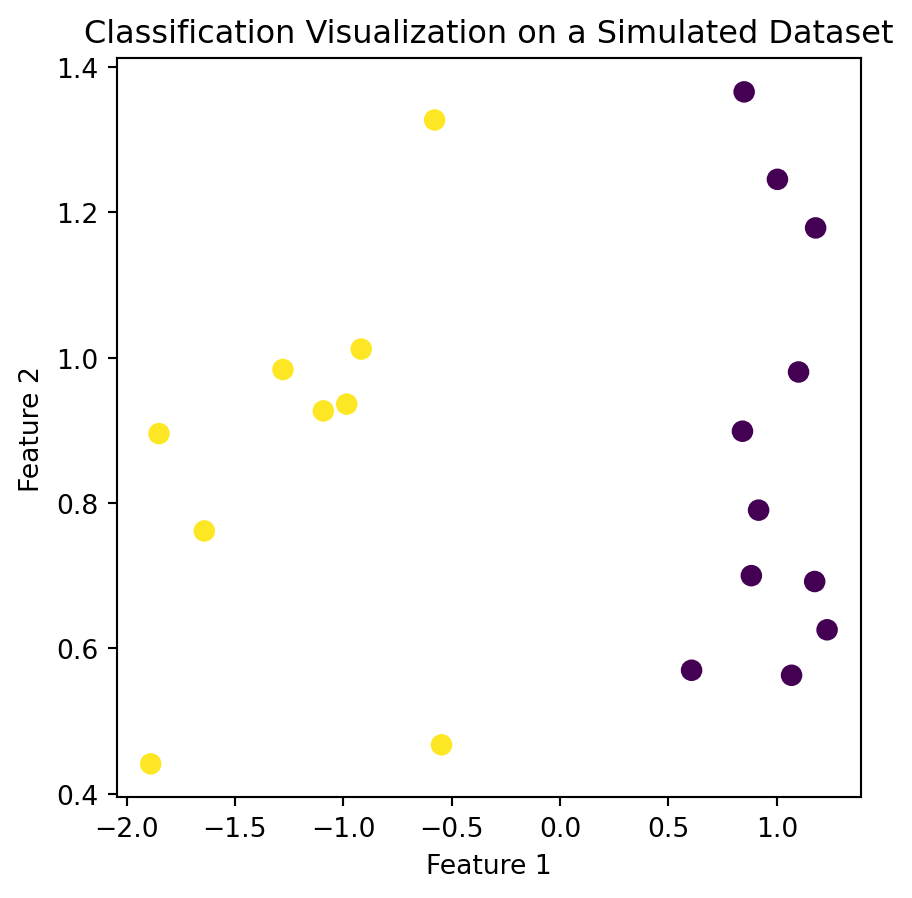
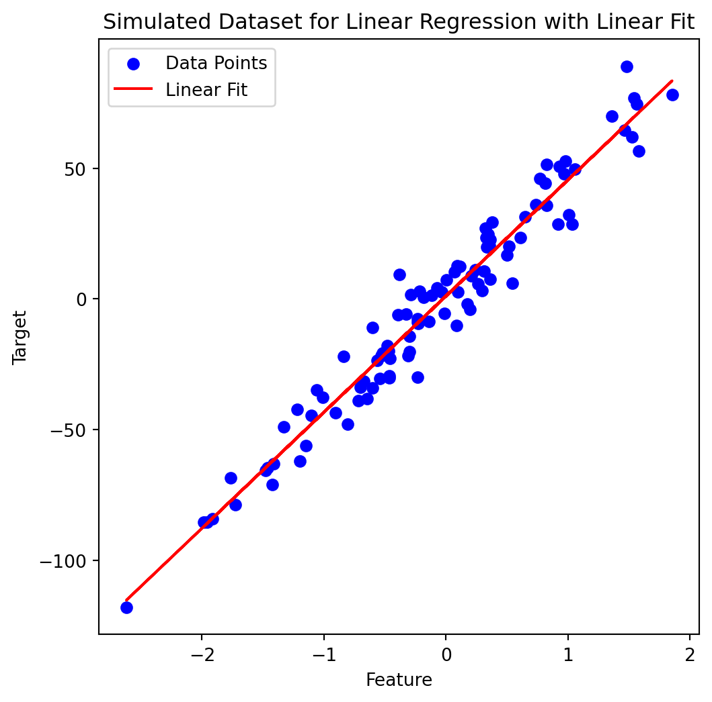
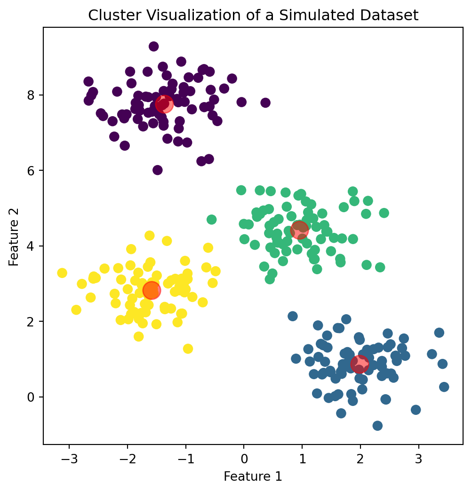
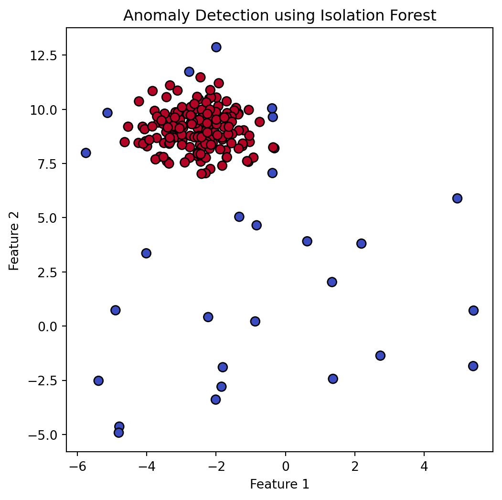
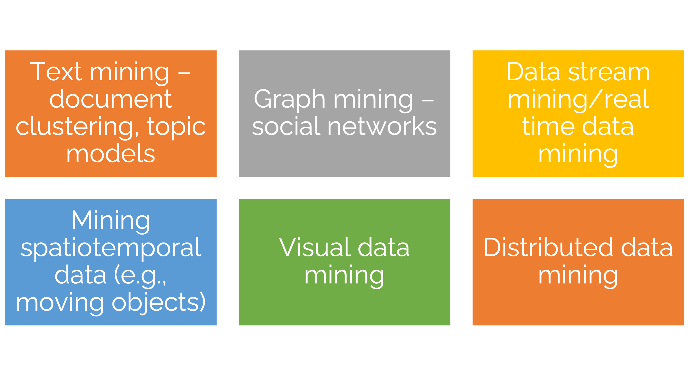
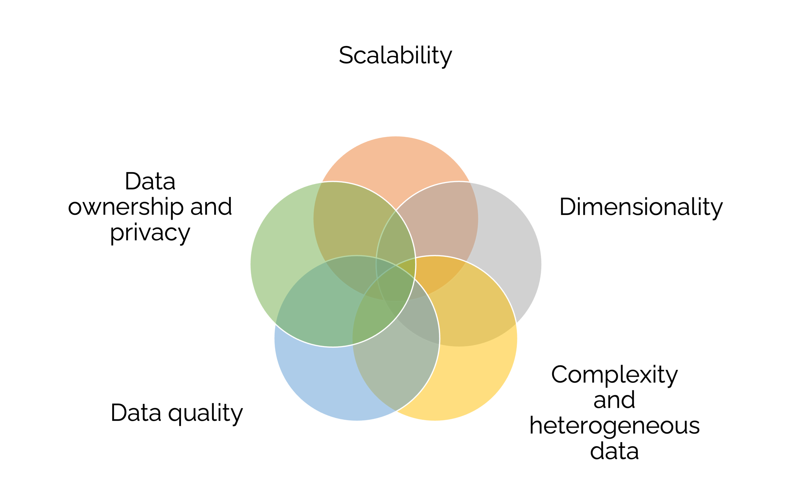
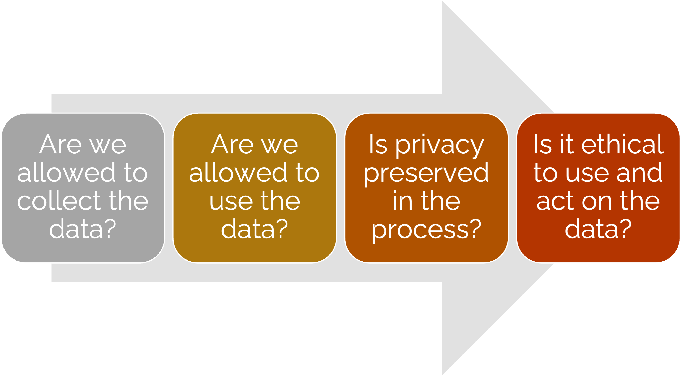

Introduction to Data Mining
Lecture 1
John Chen
University of Arizona
INFO 523 - Fall 2025
Warm up
Announcements
Reading Quiz #1 is due Friday, Jan 19th, 11:59pm
Project 1 overview next week
- Teams will be announced as well
What is data mining?
One of many definitions:
“Data mining is the science of extracting useful knowledge from huge data repositories.” - ACM SIGKDD, Data Mining Curriculum: A Proposal
What is data mining?
Convergence of several fields
Statistics
Computer science (machine learning, AI)
Data science
Optimization
Why data mining?
Commercial viewpoint
Businesses collect + store tons of data
- Purchases at department/grocery stores
- Bank/credit card transactions
- Web and social media data
- Mobile and IOT
Computers are cheaper + more powerful
Competition to provide better services
- Mass customization and recommendation systems
- Targeted advertising
- Improved logistics
Knowledge discovery in databases (KDD)

Data mining tasks
Descriptive
Find human-interpretable patterns that describes the data
Predictive Methods
Use features to predict unknown or future values of another feature
Predictive modeling
Classification
| Budget | Duration | Channel | Target_Audience_Size | Season | Campaign_Success | |
|---|---|---|---|---|---|---|
| 0 | 1.170199 | -1.110199 | 1 | -0.910081 | 1 | 0 |
| 1 | 0.198680 | 1.499221 | 0 | 0.988123 | 1 | 1 |
| 2 | 1.695723 | 0.126734 | 0 | 0.222349 | 0 | 1 |
| 3 | -0.531455 | -0.169270 | 1 | -2.224787 | 0 | 0 |
| 4 | 0.194052 | -2.479343 | 0 | 1.518522 | 2 | 0 |
Regression

| Feature | Target | |
|---|---|---|
| 0 | 0.931280 | 50.779929 |
| 1 | 0.087047 | -10.065270 |
| 2 | -1.057711 | -34.918392 |
| 3 | 0.314247 | 10.526743 |
| 4 | -0.479174 | -17.738377 |
Classification
Find a model for the class attribute as a function of the other attributes
Goal: assign new records to a class as accurately as possible.
E.g., Customer Attrition, Directed Marketing

| Budget | Duration | Channel | Target_Audience_Size | Season | Campaign_Success | |
|---|---|---|---|---|---|---|
| 0 | 1.170199 | -1.110199 | 1 | -0.910081 | 1 | 0 |
| 1 | 0.198680 | 1.499221 | 0 | 0.988123 | 1 | 1 |
| 2 | 1.695723 | 0.126734 | 0 | 0.222349 | 0 | 1 |
| 3 | -0.531455 | -0.169270 | 1 | -2.224787 | 0 | 0 |
| 4 | 0.194052 | -2.479343 | 0 | 1.518522 | 2 | 0 |
| 5 | 1.807197 | 1.341938 | 1 | -0.667830 | 1 | 1 |
| 6 | -0.093387 | -2.407374 | 0 | -0.480568 | 2 | 0 |
| 7 | 1.063941 | 0.864310 | 1 | -0.957300 | 1 | 1 |
| 8 | -1.433152 | 1.360601 | 1 | 1.384636 | 1 | 1 |
| 9 | -0.937926 | 0.464292 | 1 | -2.113015 | 0 | 1 |
Regression
Find a model that predicts a variable (Y) from another variable (X)
Both are continuous variables (floats)

| Feature | Target | |
|---|---|---|
| 0 | 0.931280 | 50.779929 |
| 1 | 0.087047 | -10.065270 |
| 2 | -1.057711 | -34.918392 |
| 3 | 0.314247 | 10.526743 |
| 4 | -0.479174 | -17.738377 |
| 5 | 0.647689 | 31.564596 |
| 6 | -0.463418 | -30.068883 |
| 7 | 0.542560 | 5.912007 |
| 8 | 0.611676 | 23.473374 |
| 9 | 1.003533 | 32.343595 |
Association mining
Given a set of transactions, produce rules of association
antecedents consequents antecedent support consequent support support \
0 (Diapers) (Beer) 0.8 0.6 0.6
1 (Beer) (Diapers) 0.6 0.8 0.6
2 (Diapers) (Bread) 0.8 0.8 0.6
3 (Bread) (Diapers) 0.8 0.8 0.6
4 (Milk) (Bread) 0.8 0.8 0.6
5 (Bread) (Milk) 0.8 0.8 0.6
6 (Milk) (Diapers) 0.8 0.8 0.6
7 (Diapers) (Milk) 0.8 0.8 0.6
confidence lift representativity leverage conviction zhangs_metric \
0 0.75 1.2500 1.0 0.12 1.6 1.00
1 1.00 1.2500 1.0 0.12 inf 0.50
2 0.75 0.9375 1.0 -0.04 0.8 -0.25
3 0.75 0.9375 1.0 -0.04 0.8 -0.25
4 0.75 0.9375 1.0 -0.04 0.8 -0.25
5 0.75 0.9375 1.0 -0.04 0.8 -0.25
6 0.75 0.9375 1.0 -0.04 0.8 -0.25
7 0.75 0.9375 1.0 -0.04 0.8 -0.25
jaccard certainty kulczynski
0 0.75 0.375 0.875
1 0.75 1.000 0.875
2 0.60 -0.250 0.750
3 0.60 -0.250 0.750
4 0.60 -0.250 0.750
5 0.60 -0.250 0.750
6 0.60 -0.250 0.750
7 0.60 -0.250 0.750 Association mining
Let the rule discovered be:
{Potato Chips, …} → {Soft drink}Soft drink as RHS: what can boost sales? Discount Potato Chips?
Potato Chips as LHS: which products are affected if Potato Chips are discontinued
Potato Chips in LHS and Soft drink in RHS: What products should be sold with Potato Chips to promote sales of Soft drinks!
Association mining goals
- Goal: Anticipate the nature of repairs to keep the service vehicles equipped with right parts to speed up repair time.
- Approach: Process the data on tools and parts required in previous repairs at different consumer locations and discover co-occurrence patterns.
Clustering

Group points that are similar to one another
Separate dissimilar points
Groups are not known → Unsupervised Learning
E.g., Market Segmentation, Document Types
Anomaly detection
Detect significant deviations from normal behavior.


Other data mining tasks

Challenges of data mining

Legal, privacy, and security issues
Problem: Internet is global, legislation is local!

Legal, privacy, and security issues
Top Mobile App: Angry Birds is the highest-selling paid app on iPhone in the US and Europe.
Downloads: Surpassed a billion downloads globally.
Player Engagement: Users often engage for hours playing the game.
Privacy Concerns: A study by Jason Hong of Carnegie Mellon University found that out of 40 users, 38 were unaware that their location data was being stored.
Ad Targeting: The location data was used for targeting ads to the users.
Legal, privacy, and security issues
Location & Camera Access: Pokémon Go tracks location and requires camera access.
Data Collection Potential: Its popularity may lead to significant data gathering.
Privacy Policy Issues: Criticized for being deliberately vague.
User Data as Asset: User data classified as a business asset in the privacy agreement.
Data Transfer Clause: User data can be transferred if Niantic is sold.
Conclusions
Data Mining is interdisciplinary
Statistics
CS (machine learning, AI)
Data science
Optimization
Data mining is a team effort
Data management
Statistics
Programming
Communication
Application domain
Intro to NumPy

What is NumPy?
NumPy = Numerical Python
Foundational package for scientific computing
High-performance multidimensional arrays
Tools for working with arrays
Why NumPy for data mining?
Essential for data processing, manipulation, and analysis.
Underpins advanced data mining algorithms implemented in Python.
Fast and memory-efficient with powerful data structures.
NumPy Arrays
Creating arrays
import numpy as np
# Creating a simple NumPy array
arr = np.array([1, 2, 3, 4])
# Multidimensional array
multi_arr = np.array([[1, 2, 3], [4, 5, 6]])
# Range of values
range_arr = np.arange(10)
# Array of zeros
zeros_arr = np.zeros((3, 3))
# Array of ones
ones_arr = np.ones((2, 2))
# Identity matrix
identity_matrix = np.eye(3)arr: [1 2 3 4]
multi_arr: [[1 2 3]
[4 5 6]]
range_arr: [0 1 2 3 4 5 6 7 8 9]
zeros_arr: [[0. 0. 0.]
[0. 0. 0.]
[0. 0. 0.]]
ones_arr: [[1. 1.]
[1. 1.]]
identity_matrix: [[1. 0. 0.]
[0. 1. 0.]
[0. 0. 1.]]Array attributes
Array operations
Arithmetic operations
addition: [3 4 5 6]
subtraction: [-1 0 1 2]
multiplication: [2 4 6 8]
division: [0.5 1. 1.5 2. ]
Aside
Why do my outputs look than different than Python?
Statistical operations
total: 10
mean_value: 2.5
std_dev: 1.118033988749895
corr: [[1. 1.]
[1. 1.]]
Advanced operations
Reshaping and transposing
range_arr: [0 1 2 3 4 5 6 7 8 9]
reshaped: [[0 1 2 3 4]
[5 6 7 8 9]]
multi_arr: [[1 2 3]
[4 5 6]]
transposed: [[1 4]
[2 5]
[3 6]]
Indexing and slicing
multi_arr: [[1 2 3]
[4 5 6]]
row: [4 5 6]
column: [3 6]
Broadcasting
multi_arr: [[1 2 3]
[4 5 6]]
broadcasted_addition: [[2 2 4]
[5 5 7]]
Linear algebra in NumPy
Matrix operations
Dot product: take two equal-length sequences and return a single number
2 • (1, 2, 3) = 2x1 = 2; 2x2 = 0; 2x3 = 6
Matrix multiplication:
(1, 2, 3) • (7, 9, 11) = (1×7 + 2×9 + 3×11) = 58
dot_product: 30
matrix_mul: [[1. 2. 3.]
[4. 5. 6.]]
Eigenvalues and Eigenvectors
eigenvalues: [1. 1. 1.]
eigenvectors: [[1. 0. 0.]
[0. 1. 0.]
[0. 0. 1.]]
NumPy for data mining
Application in Algorithms
- NumPy arrays are used in various data mining algorithms like clustering, classification, and neural networks.
Performance
- NumPy operations are implemented in C, which makes them much faster than standard Python.
Conclusion
NumPy is integral to data mining and analysis in Python.
It provides efficient and fast operations for array and matrix manipulation.
Understanding NumPy is crucial for implementing and customizing data mining algorithms.